Hitler junto a Ernst Röhm en 1933. Röhm moriría un año después en la Noche de los Cuchillos Largos.
El 29 de enero de 1933 fue uno de los días más difíciles en la vida de Adolf Hitler. Esperaba ser nombrado canciller de un momento a otro, pero no ignoraba que eran muchos los que procuraban impedirlo: desde los cien mil obreros que se manifestaban en su contra por las calles de Berlín hasta el general Kurt von Schleicher, último en ocupar dicho cargo. La espera le consumía mientras deambulaba frenéticamente por sus habitaciones del hotel Kaiserhof. Por fin, entrada ya la tarde, su correligionario Hermann Göring le trajo la esperada noticia: el presidente Hindenburg había accedido. A la mañana siguiente sería nombrado canciller.
Pero, contra lo que se suele suponer, Hitler se hallaba aún muy lejos de ostentar el poder absoluto. En su gabinete sólo había dos ministros nazis de un total de once: Wilhelm Frick en Interior y Hermann Göring sin cartera. Los otros nueve provenían de distintas formaciones conservadoras, y Franz von Papen, su vicecanciller, tenía la misión, de acuerdo con el presidente, de marcarle de cerca. No obstante, el nombramiento le permitiría utilizar a su favor los mecanismos que el propio Estado le brindaba, lo que, unido a su férrea determinación, acabaría por otorgarle el triunfo.
La vía legal hacia el poder
Antes, sin embargo, debía alcanzar una mayoría parlamentaria que tampoco poseía. Para lograrla se entrevistó con monseñor Kaas, líder del Zentrum, el partido católico, con el fin de asegurar el apoyo de sus 75 escaños. El proyecto fracasó. Lejos de amilanarse, hizo un llamamiento al pueblo por radio en el que se presentaba como el líder de un movimiento nacionalista y regenerador. Asimismo, convocaba elecciones generales para marzo, y garantizaba al Ejército que no tendría que involucrarse en enfrentamientos internos y podría dedicarse por entero a la defensa nacional.
Con todo, la suerte vino en su ayuda. En febrero, el Reichstag, o Parlamento, fue incendiado por Marinus van der Lubbe, un antiguo comunista holandés por entonces anarquista. Como si de una señal se tratara, aquella misma noche comenzaron las detenciones de líderes izquierdistas, que se prolongarían durante las semanas siguientes. La máquina propagandística nazi hacía ver al pueblo, y éste lo percibía como tal, que el incendio no era más que el principio de una conspiración comunista para hacerse con el control de Alemania, ante la cual debían tomarse drásticas medidas
Se estrecha el cerco
- Aprovechando tal estado de cosas, y por sugerencia del Secretario de Estado
Heinz Höhne, Hitler presentó a la firma del presidente Hindenburg el decreto para la Defensa del Pueblo y del Estado. Era un instrumento jurídico que suspendía las garantías constitucionales y legitimaba toda clase de medidas coercitivas: arrestos, allanamiento de sedes políticas y sindicales, supresión de reuniones... A ellas se aplicaron con gusto los nuevos auxiliares de policía, provenientes en su mayor parte de las SA y las SS. En este ambiente tuvieron lugar las elecciones generales.
En las mismas, el Partido Nacional-socialista (NSDAP) resultó vencedor con 238 escaños. Pero no logró la tan ansiada mayoría absoluta: a pesar de las acciones represoras, los socialdemócratas (SPD) habían obtenido 120 actas y los comunistas (KPD) 81.
La situación no resultaba cómoda para Hitler, que pretendía gobernar con plenos poderes los siguientes cuatro años. Ello implicaba un cambio constitucional que requería el apoyo de dos tercios de la Cámara. Así pues, procuró revestirse de una respetabilidad que tranquilizara tanto a sus aliados políticos como a las fuerzas vivas de la nación.
La escenificación tuvo lugar en la sesión inaugural de la legislatura, celebrada en la Ópera Kroll, dado que el Relchstag había quedado destruido. Se eligió para ello el 21 de marzo, "Día de la Nación", que conmemoraba la inauguración por Bismarck del primer Relchstag del Imperio de 1871. La doble ceremonia religiosa (católica y protestante) se celebró en la iglesia de la guarnición de Potsdam, que albergaba el mausoleo del gran emperador prusiano Federico II el Grande (1712-86).
Modesto y comedido, Hitler cedió al menos aparentemente, todo el protagonismo al presidente Hindenburg, y se presentó a si mismo como respetuoso garante de la tradición prusiana, con evidente satisfacción para la mayoría de los presentes. El mensaje resultaba obvio: la vieja Alemania volvía a renacer de la mano de Hltler tras el olvidable paréntesis de la República de Weimar. Lo que nadie vio, o no quiso ver, fue cómo los diputados socialistas y comunistas que se acercaban para participar en el acto eran detenidos por miembros de las SA y SS.
A pesar del valiente discurso del parlamentario socialdemócrata Otto Wels, el Reichstag aprobó, con 441 votos a favor y 94 en contra (pertenecientes a los diputados del SPD que habían logrado asistir a la cámara), la ley de Plenos Poderes. Ésta retiraba la facultad legislativa al Parlamento y sería prorrogada cada cuatro años. Los diputados comunistas no habían podido votar: se hallaban detenidos o exiliados. El triunfo del Führer por la vía de la legalidad parecía cercano.
La "segunda revolución"
Hitler puso en marcha de inmediato un amplio conjunto de medidas legales tendentes a anular a la oposición y controlar el país. Uno tras otro, los partidos políticos se autodisolvieron o fueron prohibidos; se purgó de judíos y comunistas el cuerpo de funcionarios; se disolvieron los sindicatos a favor del nacionalsocialista Frente Alemán del Trabajo (DAF); los gobiernos regionales perdieron sus competencias... Hasta que, con la ley de Garantías de la Unidad del Partido y del Estado, el NSDAP se convertía en una organización de derecho público con su propia ordenación jurídica. Fue justamente entonces, en un momento en que los nazis se hallaban en vías de alcanzar definitivamente el poder, cuando del propio partido (más concretamente de las filas de los casi tres millones de integrantes de las SA, las milicias del NSDAP) comenzaron a surgir voces pidiendo una "segunda revolución".
Los integrantes de las SA eran hombres duros y pendencieros, muchos de ellos procedentes de las clases menos favorecidas. Miles de izquierdistas se habían integrado también en las Secciones de Asalto para esconder antiguas veleidades comunistas. Todos ellos esperaban recibir palpables recompensas por sus años de interminables luchas callejeras contra el 'Frente Rojo y la Reacción", como entonaban sus canciones. Pero además exigían una auténtica, aunque imprecisa, revolución social. Es más, Ernst Röhm, su jefe, homosexual confeso y el único miembro del entorno de Hitier que se atrevía a tutearle, propugnaba la fusión de sus milicias pardas con el Ejército regular a fin de crear unas Fuerzas Armadas verdaderamente nacionales, eso sí, bajo su mando.
Lejos de esconder sus Intenciones, Röhm aprovechaba cualquier ocasión para manifestarlas, confiado en la antigua amistad que él y el Führer se profesaban. Así, en la ceremonia de entrega de dagas a sus oficiales a principios de enero de 1934 señalaba: "Las SA y SS (entonces teóricamente bajo su autoridad) no consentirán que la revolución alemana sea traicionada a medio camino por los no combatientes.... Y en sus círculos más íntimos vertía opiniones como la siguiente: "SI él (HitIer) cree que puede estrujarme para sus propios fines eternamente y algún día echarme a la basura, se equivoca. Las SA pueden ser también un instrumento para controlar al propio Hitler".
El peligro Róhm
El canciller no parecía darse cuenta del alcance de tales manifestaciones, o al menos no lo expresaba así, ni tomaba partido cuando se criticaba la conducta equívoca de ciertos mandos de las SA. Pero otros comenzaron a preocuparse seriamente.
El Ejército, por ejemplo, y más concretamente su cuerpo de oficiales, veía en las SA una fuente inagotable de futuros y entrenados reclutas con que engrosar sus magras filas, limitadas tras la derrota en la Primera Guerra Mundial (1918) a 100.000 hombres. Sin embargo, temía al mismo tiempo ver perdida en manos de unos advenedizos su propia identidad, así como la tradición militar prusiana de la que se consideraba garante. Frases de Röhm como "La roca gris [en alusión al color del uniforme del Ejército] debe hundirse en la marea parda (color de la camisa de las SA)" convertían sus suspicacias en certidumbres.
Tampoco los industriales veían con simpatía las actuaciones de los camisas pardas. Si bien habían aceptado a Hitler, según creían temporalmente, para eliminar la amenaza comunista y poner orden en el Reich, no por ello estaban dispuestos a permitir una revolución. Es más, el reiterado absentismo laboral por los más fútiles motivos de los miembros de las SA, así como sus constantes alborotos, iban en creciente detrimento de la productividad y la paz social que toda acción económica requiere, y de ello se habían quejado reiteradamente al Führer.
También en el seno del partido se alzaron voces contra Röhm y su círculo más allegado. La enemistad que Hermann Góring sentía por él era de sobras conocida, y se remontaba a los primeros tiempos del movimiento. Cuando en 1931 HitIer ofreció a aquél el mando efectivo de las SA, el orondo ex piloto, que aspiraba al cargo, se encolerizó y filtró a la prensa opositora comprometedoras cartas de Röhm dirigidas a uno de sus amantes. Sin embargo, Hitler se mantuvo al lado de su antiguo amigo aduciendo que la vida privada de los demás no era de su incumbencia. Göring deseaba ahora el mando de las futuras Fuerzas Armadas, y las pretensiones del jefe de las Secciones de Asalto en el mismo sentido lo habían convertido en su mayor obstáculo.
Pero de quien nadie podía sospechar razón alguna contra Röhm era de Heinrich Himmler. Su teórico superior le había distinguido siempre con su amistad, y Himmler aprovechaba la menor ocasión para manifestarle públicamente su fidelidad. Sin embargo ahora se le presentaba la oportunidad no sólo de independizarse, sino de alcanzar una importante cuota de poder que no debía echar a perder. A buen seguro la frialdad analítica de su mano derecha, Reinhard Heydrich, había desempeñado un importante papel en su nuevo posicionamiento.
Se gesta la conspiración
Sea como fuere, Himmler ordenó a Reinhard Heydrich, Jefe de la SD, el servicio de información del partido, que recopilara cuantos datos pudiese obtener sobre Röhm y los suyos. Pronto, noticias de escasa trascendencia se convirtieron en pruebas fehacientes de un complot de las SA que incluía las listas de los militares que asesinar una vez alcanzado el poder. Las evidencias eran filtradas al ministro de Defensa, Werner von Blomberg, a través de Walter von Reichenau, un militar de notorias simpatías nazis. Mientras Rudolf Hess recriminaba públicamente a Róhm su actitud, Viktor Lutze, jefe de las SA en Hannover, contaba a HitIer y Von Reichenau cómo se burlaba Röhm del Führer en privado.
Ante el empeoramiento de la salud del octogenario Hindenburg, HitIer aprovechó unas maniobras navales para reunirse con Blomberg y los jefes del Ejército, el general Werner F von Fritsch, y la Armada, el almirante Erich Raeder. El encuentro se produjo el 11 de abril de 1934 en el acorazado DeutschIand. En él, y a pesar de la reticencia de Fritsch, que manifestó que debía consultarlo con otros generales, se propuso a Hitler como sucesor del presidente a cambio de asegurar el futuro papel de las Fuerzas Armadas y limitar el rol de las SA. Nueve días después, Heinrich Himmler, con el beneplácito de Góring, que hasta entonces se había opuesto, accedía a la jefatura de la Gestapo. El pacto anti-Rühm se había cerrado.
La gota que colmó el vaso
A pesar de todo, Hitler no tomaba decisión alguna para descabezar las levantiscas Secciones de Asalto. Es más, a principios de junio se reunió con Röhm para sentar las bases de un futuro acuerdo que satisficiera a ambos, y se concedió un permiso a todas las SA para el mes siguiente. Mientras, Góring, Himmler y Heydrich se aplicaban a confeccionar las crecientes listas de sus futuras víctimas. Pero los acontecimientos se precipitaban. No había pasado una semana desde la entrevista entre Hitler y Röhm cuando la opinión pública alemana tuvo noticia de enfrentamientos en el seno de las propias SA. Los conflictos surgieron entre los militantes de siempre y nuevos afiliados provenientes de los Cascos de Acero, respetada asociación de antiguos combatientes ahora integrados en las Secciones de Asalto. Unos días después, el propio Hitler, de visita en Venecia, era advertido por Mussolini de la necesidad de poner orden en su propia casa. Pero la gota que colmó el vaso fue el discurso del aún vicecanciller Franz von Papen a mediados de mes en la Universidad de Marburgo.
En una inusual muestra de coraje político impropio de su personalidad, Von Papen pidió decencia, la vuelta de algunas libertades y el fin de la aún no comenzada "Segunda Revolución" de una forma bien explícita: "Acaso hemos llevado a cabo una revolución antimarxista para poner en marcha una revolución marxista". Las ovaciones resonaron atronadoramente en el paraninfo y, a pesar de los esfuerzos del ministro de Propaganda Joseph Goebbels para evitar su difusión, el texto del discurso se extendió por Alemania, mientras Von Papen era agasajado en todas partes con importantes muestras de afecto. HitIer estaba furioso, y ante el temor a una intervención presidencial decidió ir a ver a Hindenburg a su residencia de Neudeck (Prusia oriental).
En contra de lo habitual, el canciller fue recibido con frialdad por Blomberg. Éste le advirtió, de parte del presidente, que se declararía el estado de sitio y el Ejército impondría el orden en el país si no acababa con las SA. Hitler, que veía cercana la muerte de Hindenburg y temía que en su testamento abogara por la reinstauración de la monarquía, accedió, pues necesitaba del apoyo del Ejército para la consecución de sus planes. A finales del mes de junio, la Liga de Oficiales alemanes expulsaba al capitán Röhm de sus filas para no mancharse las manos con uno de los suyos, mientras cancelaba permisos y acuartelaba a las tropas. Dos días después el Ejército entregaba armas a los SS de Sepp Dietrich. Al siguiente, aparentemente ajeno a todo, HitIer viajaba a Essen para asistir a la boda del gauleiter Terboven, y llamó al confiado Róhm por teléfono para precisar que su entrevista tendría lugar el día 30 a las 11 horas.
El 29 aparecía en las páginas del Völkisscher Beobachter, el periódico oficial del partido nazi, un artículo de Von Blomberg garantizando la lealtad del Ejército a Hltler y pidiendo el fin de las acciones de las SA. Fue la señal inequívoca de que la acción sería inminente.
Se desencadena la tragedia
Aquel mismo día, Hitler recorría los campos de trabajo de Westfalia. Por la tarde se reunió cerca de Bad Godesberg con Joseph Goebbels, hasta entonces con dudas sobre qué partido tomar. Este le informó de que el Jefe de las SA de Berlín, Karl Ernst preparaba un golpe, cuando en realidad se hallaba camino de Bremen para comenzar su viaje de novios a Madeira vía Tenerife. El Führer hizo llamar a Viktor Lutze y le nombró jefe de las SA en sustitución de Róhm. Sin pérdida de tiempo, y ya de madrugada, Hltler y los suyos se trasladaron en avión de Bonn a Munich, donde los esperaba Sepp, Dietrich y sus escogidos SS. A continuación hicieron el trayecto en automóvil hasta Bad Wiessee, donde, ajenos a lo que ocurría, los altos cargos de las SA dormían plácidamente.
La acción tuvo lugar en poco tiempo. Mientras algunos eran asesinados allí mismo, otros, como el propio Röhm, eran detenidos y transportados sin miramiento a la prisión muniquesa de Stadelheim. A media mañana, y ante el éxito de la operación, la misma se extendía por toda Alemania, en donde un número indeterminado de personas eran detenidas o eliminadas.
Al día siguiente, como si nada hubiese ocurrido, a pesar de que los periódicos hablaban de detenciones y ejecuciones, Hitler ofrecía un té en la Cancillería y discutía con sus allegados la suerte que debía correr un Röhm ahora encarcelado. Por fin, cuando el propio Hitler se dio cuenta de que era el único que abogaba por la suerte de aquel, accedió a abandonar a su amigo. Este sería asesinado en su celda al día siguiente por dos hombres de las SS, tras rehusar darse muerte con la pistola que le habían dejado. Fue la señal para detener las ejecuciones.
A mediados de julio, en un brillante discurso, Hitler dio cuenta a los miembros del Reichstag de las razones que le habían inducido a llevar a cabo la purga. Según afirmó, un grupo en el seno de las SA, en connivencia con potencias extranjeras, se había alejado del partido y preparaba un golpe para hacerse con el control de Alemania, por lo que se había visto obligado a actuar en bien del país. Pocos días después, Himmler recibió su premio. Sus SS se separaban oficialmente de las SA, y únicamente serían responsables ante Hitler.
Éste sólo tuvo que esperar un poco más. A principios del mes de agosto el anciano Hindenburg moría en su residencia de Neudeck. Ahora, con el beneplácito del Ejército, las funciones de presidente y canciller se unificaban en su persona. En adelante pasaba a ser Führer y canciller de Alemania, y jefe nominal de unas Fuerzas Armadas que le rendían juramento personal de obediencia. Por fin, el antiguo cabo se había convertido en dueño absoluto de Alemania.
¿Quién incendió el Reichstag?
COMUNISTAS Y NAZIS, ENTRE LOS PRINCIPALES SOSPECHOSOS
Durante el incendio del edificio del Reichstag, el Parlamento alemán, la policía sólo logró detener a Marinus van der Lubbe, antiguo comunista holandés convertido en anarquista. Van der Lubbe corría como un poseso por el edificio con el torso al desnudo. Sería el único condenado y ajusticiado.
La prensa nacionalsocialista señaló que se trataba de un complot comunista, por lo que también se juzgó al dirigente comunista alemán Ernst Togler y a los búlgaros Georgi Dimitrov, Vassifi Tanev y Blagoi Popov, que fueron absueltos.
Desde Moscú se inició una campaña internacional dirigida por el exiliado Willi Münzenberg, que insistía en que el acto fue perpetrado por los propios nazis. Kouze, ordenanza de Róhm, declaró durante el juicio de Nuremberg que provocaron el incendio 23 miembros de las SA que serían fusilados durante la Purga de Sangre, a excepción de él
mismo, que escapó a Suiza. Sin embargo, no se ha demostrado que fuera así.
Probablemente nunca se podrán verificar tales asertos, pero existe un general consenso en señalar a Van der Lubbe como único autor, aunque se rompe a la hora de determinar quién o quiénes le impelieron a actuar.
PROTAGONISTAS
DE UN TRÁGICO EPISODIO
| 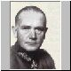 |
BLOMBERG,
WERNER VON ( 1878 – 1946 ) |
 |
DIETRICH,
JOSEF (1892 – 1966) |
| 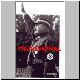 |
ERNET,
KARL (1904 – 1934) |
| 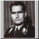 |
HESS
RUDOLF (1894
– 1987) |
| 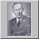 |
HEYDRICH,
REINHARD (1904 – 1942) |
| 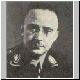 |
HIMMLER,
HEINRICH (1900
– 1945) |
 |
PAPEN,
FRANZ VON (1879 – 1969) |
| 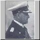 |
READER,
ERICH (1876
– 1960) |
| 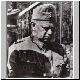 |
REICHENAU,
WALTER VON (1884 – 1942) |
| 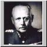 |
FRITSCH,
WERNER FREINHERR VON (1830 – 1939 ) |
| 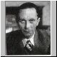 |
GOEBBELS,
JOSEPH (1897 – 1945) |
| 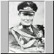 |
GÖRING,HERMANN
(1893
– 1946) |
| 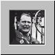 |
GÖRING,HERMANN
(1893
– 1946) |
| 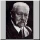 |
HINDENBURG, PAUL VON BENECKENDORFF UND VON (1847 – 1934) Mariscal y Presidente de la República de Welmar. Querido y respetado por los alemanes, no sentía una gran simpatía por Hitler, aunque accedió a nombrarle canciller. Su muerte permitió a Hitler unir su cargo al que ya poseía. |
 |
HITLER,
ADOLF (1889 – 1945) Jefe del partido Nacionalsocialista y canciller alemán. Se resistió a desencadenar la Noche de los Cuchillos Largos pero tras la misma quedó como líder indiscutible de Alemania, al unir en su persona los máximos cargos del Estado alemán. |
| 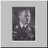 | LUTZE,
VÍCTOR (1890
– 1943) Jefe de las SA de Hanover. Acomodaticio y no muy brillante, solía contar a Hitler las comidillas de la cúpula de su organización, lo que le valió sustituir a Röhm. Con él las SA declinaron rápidamente. Murió en un accidente de coche. |
| 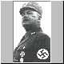 | RÖHM,
ERNST (1887 – 1934) Jefe del Estado Mayor de las SA y ex capitán del Ejército, fue el verdadero organizador de las SA. Amigo personal de Hitler, era el único miembro de su círculo íntimo que se atrevía a tutearlo. Si bien se mostró disconforme en numerosas ocasiones con éste, siempre le fue fiel. Murió asesinado el la celda 474 de la prisión muniquesa de Stadelheim. |
| 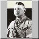 | RÖHM,
ERNST (1887 – 1934) |
| 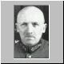 | SCHLEICHER,
KURT VON (1882 – 1934) General y ex canciller. Eterno conspirador y perpetuo hacedor de gabinetes, había intentado aprovecharse de las disidencias en el seno del nazismo aproximándose a Gregor Strasser. Asesinado junto con su esposa en la Noche de los Cuchillos Largos. |
 |
STRASSER,
GREGOR (1892 – 1934) Farmacéutico. Uno de los fundadores de NSDAP podía situarse en el ala izquierda del partido. Respetado por amigos y enemigos, mantuvo contactos con el general Von Schiecher, lo que provocó su dimisión y la retirada de la política activa. Murió asesinado durante la Purga de Sangre. |
GLOSARIO
GAULEITER
Jefe político de cada una de las circunscripciones territoriales (Gau) en que
los nacionalsocialistas dividieron el país.
GESTAPO
Abreviatura de Geheime Staatspolizei (Policía Secreta del Estado). organización
creada por Góring para Prusia que luego se extendió por toda Alemania. No tan
eficaz como se suele creer, sus acciones no estaban sujetas a revisión judicial.
Acabó siendo controlada por la SD.
NSDAP
Iniciales del Partido Nacional socialista de los Trabajadores alemanes (Nationalsoziafistische
DeutscheArbeiterpartei).
NUREMBERG (JUICIOS DE)
Proceso a los líderes nazis en la ciudad alemana de Nuremberg tras la Segunda
Guerra Mundial.
PURGA DE SANGRE
Nombre con que también se conoce la Noche de los Cuchillos Largos.
PUTSCH DE LA CERVECERÍA
Fracasado intento de golpe de estado nazi que tuvo lugar en Munich entre el
8 y 9 de noviembre de 1923. Acabó con la muerte de algunos miembros del partido
y con la detención del propio Hitier.
REACCIÓN (REAKTION)
Término despectivo con el que los nacionalsocialistas designaban a la oligarquía
conservadora.
REPÚBLICA DE WEIMAR
Régimen que gobernó Alemania entre 1918 y 1933. Recibe esta denominación por
la asamblea que elaboró la constitución en la ciudad de Weimar SID Iniciales
de Sicherheitsdienst (Servicio de Seguridad), organización creada en 1931 por
Himmier y puesta bajo el mando de Reinhard Heydrich con el objetivo de vigilar
a los miembros del partido, Acabó sobrepasando sus objetivos iniciales.
TERCER REICH
Período de gobierno de Hitier en Alemania (1933-45). El término Reich significa
imperio y designa tres períodos de la historia alemana: el Primer Reich (962-1806),
el Segundo Reich (1871-1918) y el Tercer Reich.
Revista.- HISTORIA Y VIDA. NUM. 432.